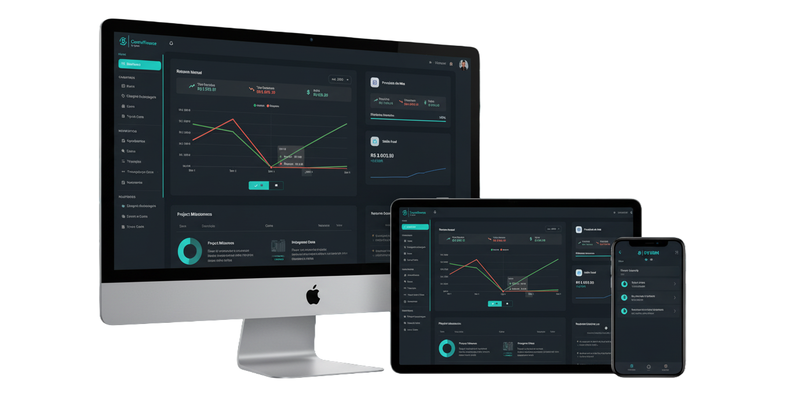

Caixa, produtos e relatórios de vendas
O módulo de PDV já permite vender produtos, registrar pagamentos, acompanhar vendas e consultar relatórios operacionais.
Organize contas, cartões, transações, orçamentos, vencimentos, compartilhamentos e vendas com uma experiência responsiva, segura e em evolução contínua. O módulo financeiro do SYSBN já reúne o controle do dia a dia e recursos operacionais para quem precisa de mais clareza.
Acessar ControlFinance
O ControlFinance combina cadastro, movimento, relatório e colaboração para você acompanhar sua vida financeira com menos esforço e mais contexto.
Acompanhe indicadores, saldos por conta, vencimentos e movimentações em telas pensadas para decisão rápida.
Cadastre cartões, acompanhe faturas, registre lançamentos e mantenha seus pagamentos organizados por competência.
Programe movimentações, efetive pendências e visualize contas a vencer para reduzir esquecimentos no fluxo financeiro.
Consulte extratos, pendências, categorias, subcategorias, tipos de conta e vencimentos com filtros para análise objetiva.
Trabalhe com contexto compartilhado de conta, mantendo dados financeiros acessíveis para quem precisa colaborar.
Conte com autenticação, renovação de sessão, histórico de auditoria e permissões para proteger ações importantes.
O sistema ganhou recursos práticos para controle financeiro, operação de vendas e gestão compartilhada.
O módulo de PDV já permite vender produtos, registrar pagamentos, acompanhar vendas e consultar relatórios operacionais.
Contas, categorias e filtros do PDV respeitam o usuário ativo e o contexto compartilhado, deixando a experiência mais segura para uso conjunto.
A autenticação recebeu renovação automática de token, enquanto tabelas, carregamentos e layout do PDV foram aprimorados.
O sistema reúne canal de feedback, central de notificações e manual para facilitar suporte, evolução do produto e uso contínuo.
O ControlFinance é o módulo ativo da plataforma e concentra os principais fluxos de gestão financeira, colaboração e operação.
Status: Ativo
Controle financeiro com contas, bancos, categorias, transações, cartões, faturas, orçamentos, agendamentos, vencimentos e relatórios.
Acessar MóduloStatus: Ativo
Caixa, produtos, resumo de pagamentos e relatórios de vendas conectados ao contexto financeiro do usuário.
Status: Ativo
Notificações, auditoria, compartilhamento, usuários, feedback e manual completam a operação diária da plataforma.
O SYSBN está em fase Beta e o ControlFinance pode ser utilizado gratuitamente enquanto seguimos evoluindo a plataforma com feedback real dos usuários.
Acesso Beta
GRÁTIS
Válido durante toda a fase Beta. Você nos ajuda com feedback!
Futuro PRO
R$ 39,90 / mês
Será lançado após o Beta. Veja o que você irá desbloquear:
R$ 69,90 / mês
O plano mais robusto para equipes e famílias grandes.